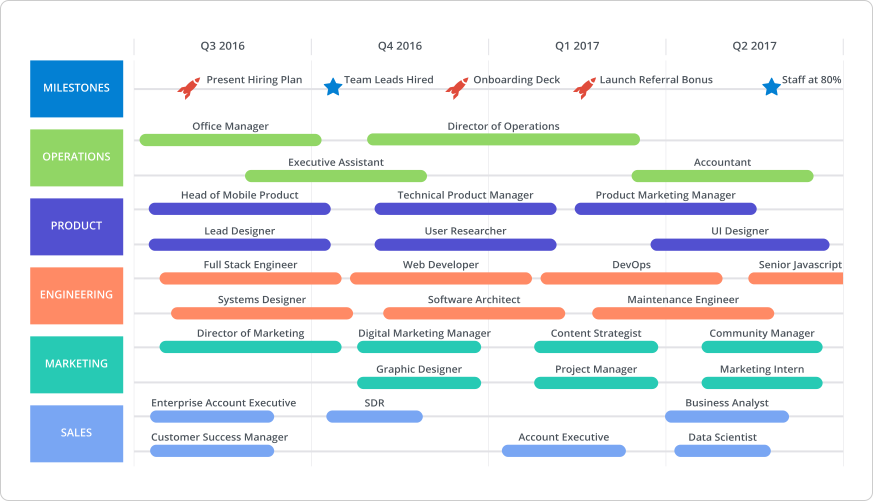
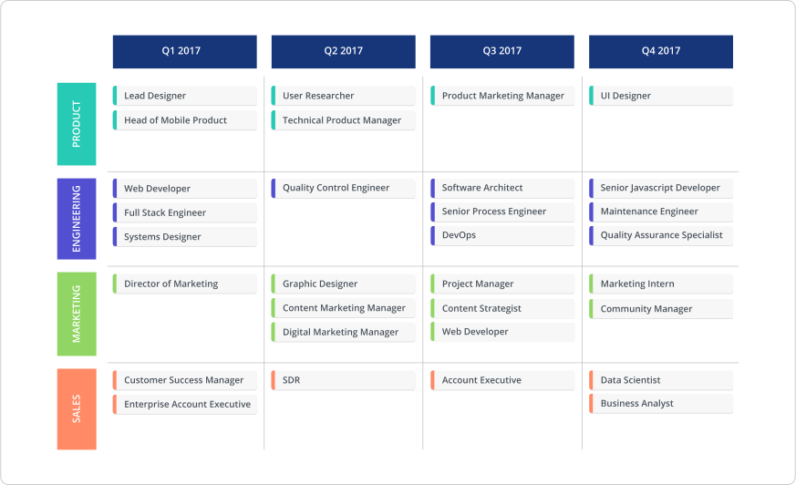

Hey there! I’m Rebekah and I lead the HR department here at Roadmunk.
I’ll be honest, if you asked me before starting here what tools are essential for HR teams, I wouldn’t have said roadmaps. Instead I would’ve said an HRIS, payroll, or learning and development platforms.
But after joining a company that builds a roadmapping tool that can be used by any type of team, I’ve started to see the real value of a roadmap within my workflow. (And not just because they pay me.)
HR departments build an HR roadmap to strategize and prioritize company culture and people-focused initiatives, as well as build and manage hiring plans. And while this HR roadmap definition sounds great on paper, it feels like an added process to learn and manage in an already overstacked workflow.
But for me, an HR roadmap has been vital in syncing with the rest of the business on our team’s objectives and priorities. Plus, it helps me ensure that overall plans to add new Roadmunkers are timely and focused in the right business areas. (And truthfully, it wasn’t hard at all to pick up!)
As a former non-roadmapper who was hesitant about learning this new skillset, I wanted to share how I approached building my HR roadmap from scratch. So here’s how I built it at Roadmunk.
We did the research on leading roadmapping tools, so you don't have to. Check it out here.
Step 1: Figure out why you need an HR roadmap
Okay, so I’m in HR, and I’ve had minimal exposure to roadmapping (I usually just whiteboard my plans). What the heck do I do?! First thing’s first, establish why you need this specific document. I personally identify four major purposes for an HR roadmap.
1. Priority mapping: When I approached our HR roadmap at Roadmunk, I had all these strong aspirations I wanted our team to achieve immediately. But I had to step back and figure out what was important for the business, what was doable AND if I had given myself enough ramp up time to reach these goals. So for me, roadmapping is an ideal exercise for visualizing which HR goals are manageable and thus, picking out the top objectives to bring to the front of the line.
2. Resourcing: HR supports various departments, through one-on-one leadership training, compensation analysis, policy reviews, and curating exceptional everyday experiences for our employees. With so many balls in the air, HR leaders need to ensure they’re not over-committing when rolling out these initiatives. Burnout is real, people!
3. Hiring plans: If recruitment is a top priority for your HR team, this roadmap can illustrate your recruitment efforts across the business. How and when will new resources be added to the business? And how do we as HR best support the induction and onboarding of these new hires?
4. Identify efficiencies: Finally, one of our core missions is to figure out how we as a business can scale in the most resourceful and effective way. An HR team (I’m about to get deep here) technically doesn’t bring in revenue; dare I say, some may even consider us a cost (!). So it’s our job to identify opportunities in which the business can be more efficient and effective. An HR roadmap highlights efficiency-improving opportunities we want to target such as automating administrative efforts and streamlining onboarding.
So these were my motivations for building an HR roadmap. Yours may differ (or maybe we’re eerily similar in motivations...), but once you’ve determined what’s spurring you to create this roadmap, it’s time for the next step: getting chatty with your stakeholders.
Step 2: Talk to your stakeholders
So, this step definitely varies business to business. At a smaller company like Roadmunk, I automatically linked with the founders and every single leader to see what their challenges or sore spots were. (These meetings might be harder to secure at a more enterprise level.) This step helped—and still helps—inform my prioritization, determine teams experiencing talent gaps and identify business areas that would benefit from efficiency-improving efforts.
If your business is small enough, I highly encourage you to have one-on-one’s with every employee. Your frontline employees are the one’s with the most impactful insights into how you can effectively improve the employee experience.Casting a wider net = more research = better prioritization.
For instance, if your people leaders are saying, “We need one-on-one leadership coaching,” but your frontline workers actually feel like the leaders are genuinely strong, that tells me we can de-prioritize leadership development initiatives. Instead of rushing and going “all in” on this one effort, we can inform our leaders of the feedback and refocus on higher-priority concerns.
Bonus: Questions for your chats
In order to get the most out of these chats with employees, you should treat them as candidate interviews. To help, I suggest going into each of these convos with a few core questions. I always like to do a start, stop and continue. This means asking:
- What should we as a business start doing?
- What should we stop doing?
- And what do we continue doing?
It’s one of the most basic HR concepts, but it extracts the most relevant info every time.
Other questions I would suggest asking in stakeholder chats are:
- If our business had infinite time and money, what would you like to see done differently?
- Who or what business do you really admire? How are they really killing it when it comes to company culture?
I find people start to say, “Well, I’ve seen such and such company do this. Maybe we can implement something similar?”
Step 3: Identify what to include on your roadmap
Step two was weighing ALL the options of what to include on the roadmap, and now it’s time to make the official call on which items to include.
In my case, I decided to prioritize items related to improving the efficiency of existing processes. For instance, onboarding initiatives for new hires can take looong, so I made it a point to create and prioritize an initiative to automate and streamline it.
You can also include items related to wider company events—like town halls or ops retrospectives. In some cases, internal events fall under HR’s purview (despite us trying to shake off the party planner stereotype) so that can also be a focus on your roadmap. Or maybe you want to stick only to massive action items, such as implementing an HRIS or rolling out new employer benefits.
Something I personally include is budget. Budgets and costs impact every aspect of what we do in HR. Can we afford to roll out BambooHR? Can we invest in external training? Working budget in with each of your items can add valuable detail that will help with decision-making. (Roadmunk’s numerical fields are my saviour when it comes to this!)
Step 4: Choose a view and build the roadmap
Alright, with all your foundations in place, the next step is to actually build the damn thing. Luckily, Roadmunk offers two different views that play to different HR roadmap use cases.

Heads up, this roadmap was built in Roadmunk! You can make your own version by going here.
If you’re an HR team that wants a more detailed story of how your team will contribute to business growth, a Timeline View is for you. This view maps out your team’s milestones, targets and events for the upcoming year (or months or quarters).
It’s the view that helps you confirm if your goals are achievable and you have enough bandwidth—both in terms of time and people. Looking at the roadmap above, let's say I undershot for how much time I’d need to hire certain team members. Maybe I’ve realized I’ve only hired half the headcount I need and I’m a few weeks away from when that target should be hit. Having an overview of the year lets me see what's a lower priority that I can push to another quarter, or even next year, in order to achieve this goal.
Think of this view as your opportunity to walk stakeholders through your anticipated timelines and validate your targeted efforts and goals. (I welcome any debate with our leadership team!) It’s your chance at getting buy-in and obtaining any extra resources you may need.

And if a Swimlane HR roadmap is more your speed, customize our HR roadmap template here.
I chose to go with our Swimlane View though, because I feel it’s tailored specifically for rapidly growing businesses (i.e. a company like ours!). This view doesn’t get rid of time altogether, but gives you an overview of the whole year by grouping things into loose time buckets like months or quarters. It’s a flexible, holistic overview of what’s going on with us over at HR.
And keeping things loosey-goosey is perfect for a growing business because our HR plan is always evolving. As new resources are brought in, priorities change and new tasks pop up that need to be addressed sooner rather than later. This means I need to be on my toes when planning. Using a flexible view that doesn’t latch onto specific timelines, helps me stay nimble (and calm) when I have to adjust plans accordingly.
I believe our Swimlane View is best suited for tracking who you’re hiring, what teams they’re joining and their respective onboarding initiatives. By pivoting the data on departments, you can quickly reference this view and see if you’re hiring for the right objectives, or whether any talent gaps exist. This also tells you which departments will need HR’s support in terms of onboarding, training or any other resources they need.
An additional benefit to this view is that it doesn’t just speak for HR; this view speaks on behalf of all departments. I can use this view to translate to the exec team that this is how each department lead wants to grow out their team—and ultimately the business. It acts as a consolidated view of all the hiring plans, so everyone in the business gets an in-your-face transparent picture of how the team headcount will grow.
Go on, give Roadmunk a try with a free 14 day trial by signing up here.
So, there you have it! As someone who had never built a roadmap in her life, this process helped me build an HR roadmap from scratch that I’m now using daily within my workflow. If you’re interested in trying it out for yourself, sign up to kickstart your own HR roadmap. (If I can do it, you definitely can!)